✧
Your little mole
That cute little mole above your upper lip. One tiny detail in a whole universe of reasons to adore you.
Somewhere in every version of the universe, there is a girl named Omnia who deserves flowers, a little magic, and every reason to smile.
Enter your universe ↓Not the big, movie-worthy moments only. The tiny things that make you unmistakably you. Those are the things worth remembering.
That cute little mole above your upper lip. One tiny detail in a whole universe of reasons to adore you.
For the girl whose favourite animal is a swan — graceful, lovely, and impossible to mistake for anyone else.
You spend your time caring for people. I hope the world remembers to be gentle with you, too.
The kind of language that probably makes no sense to anyone else — which is exactly what makes it ours.
Your name for me. Somehow, hearing it makes even an ordinary conversation feel like a scene I want to keep.
My name for you. Royal title, obviously. The crown is imaginary; the flowers are very much part of the plan.
Yes, I will probably tease you about your accent again ya fala7a. Yes, you are allowed to roast me right back. Fair is fair, Queen Girl.
The personal photos will make this feel unmistakably yours. Until they arrive, the rest of the gallery is built from little visual postcards — swans, flowers, and the feeling of a late-night cinema.
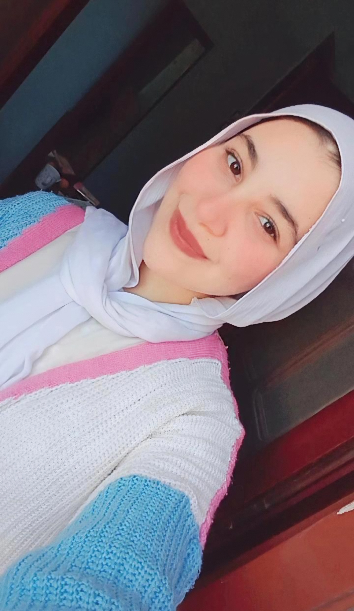
my swan The prettiest girl. A favourite picture of Omnia.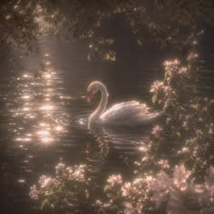
A little symbol The swan universe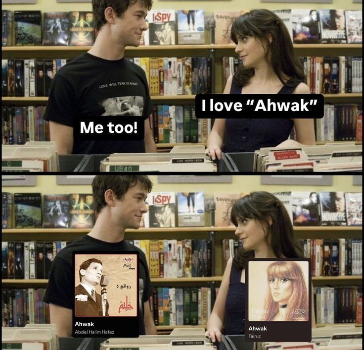
Personal frame 02 Another memory.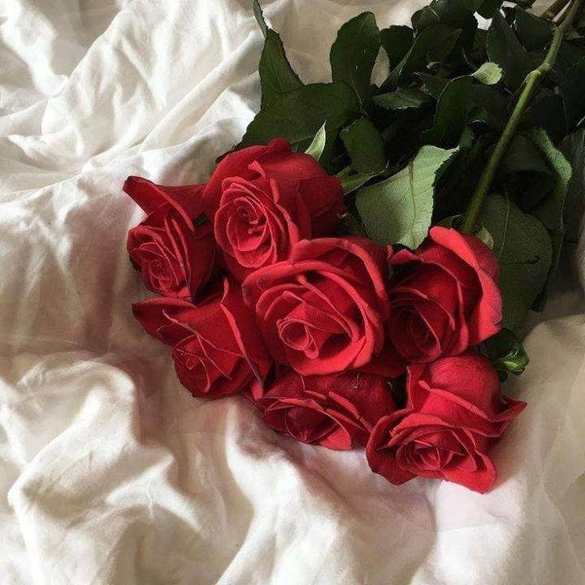
Scene imagined Flowers, someday.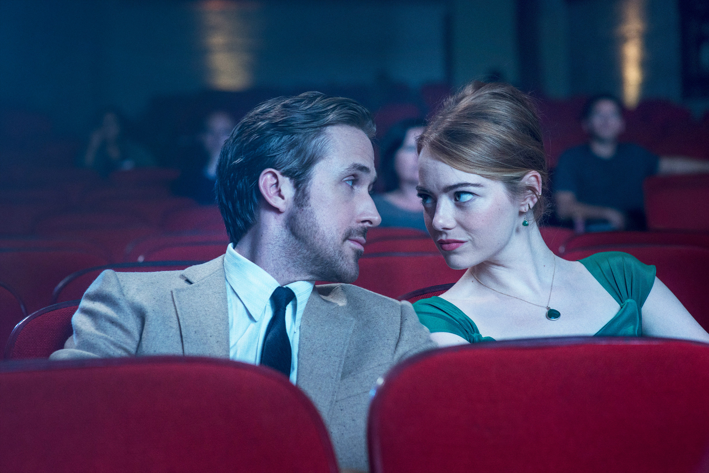
The next scene Two tickets. One screen. A memory still waiting to happen.You love movies the way I do — like a story can stay with you long after the screen goes dark. So naturally, this little universe needed its own film shelf.
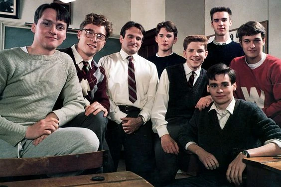
The classroom classic Dead Poets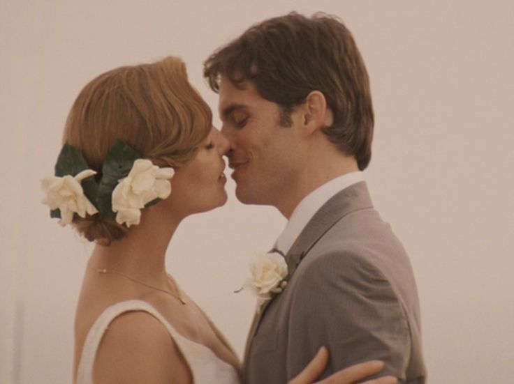
The rom-com corner 27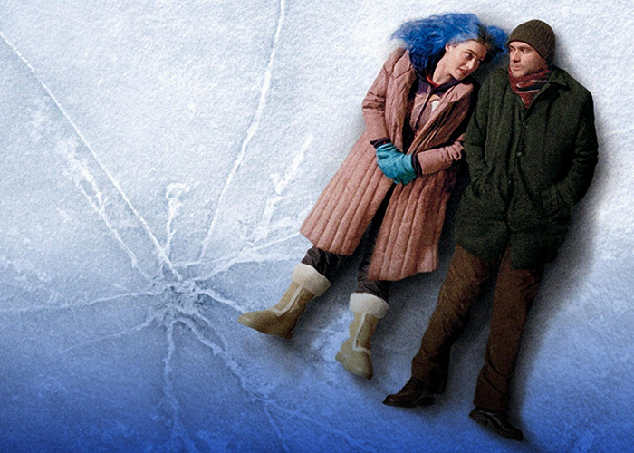
The memory lane Eternal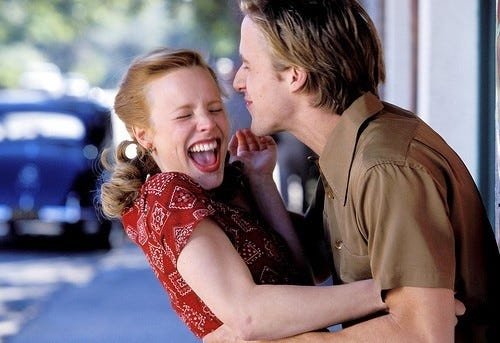
The forever favourite TheAURORA's “Runaway” gets its own place in this universe. Press play when you're ready — the video is embedded from YouTube, so playback stays with the official source.
AURORA · OFFICIAL VIDEO
Some songs feel like they belong to a person before you can explain why. This one gets a little corner of the story all to itself.
Some details deserve a second look. Open these little files — each one holds a thought tucked behind the scenes.
A little gallery of quote pictures, that expresses my feelings. Each image brings its own words, so the pictures can do the talking.
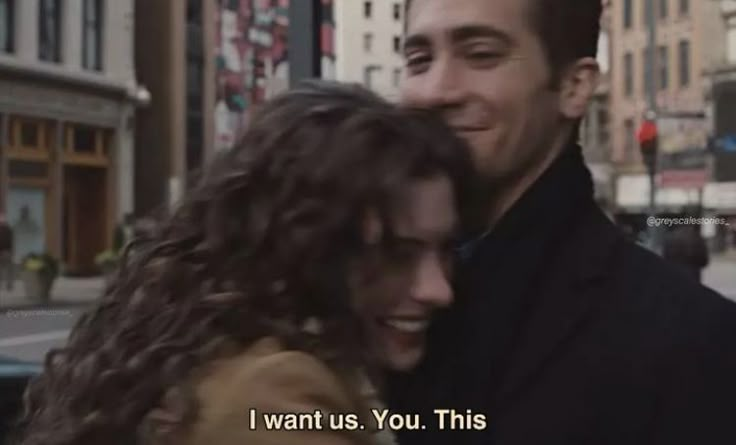
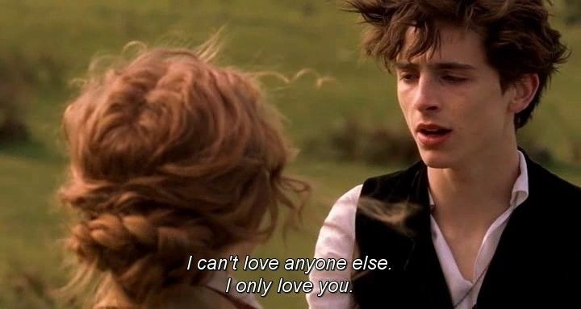
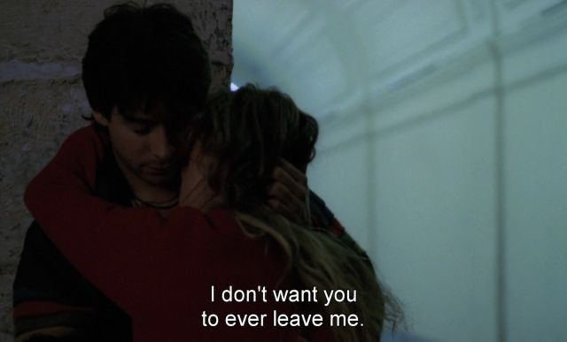
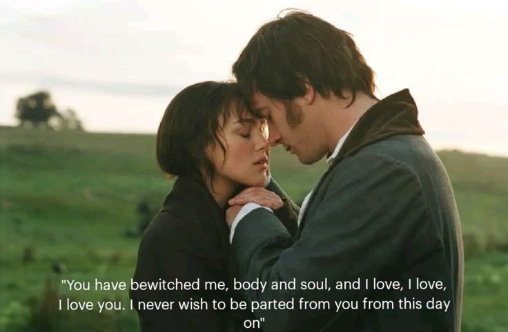
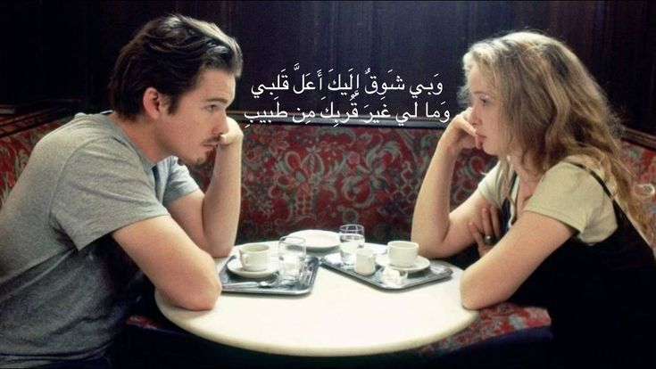
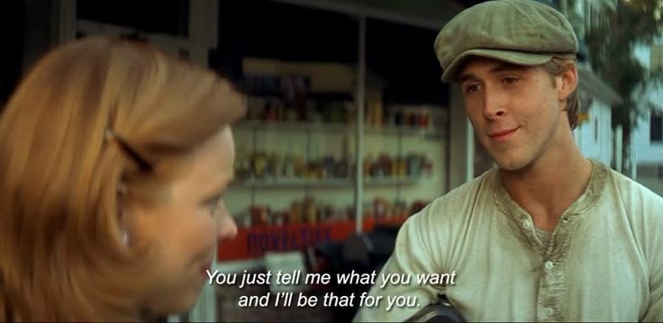
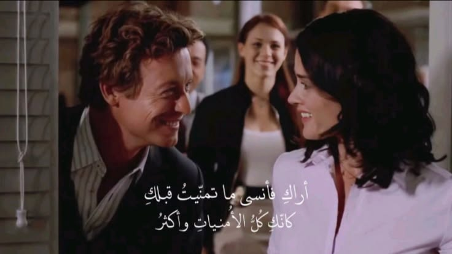
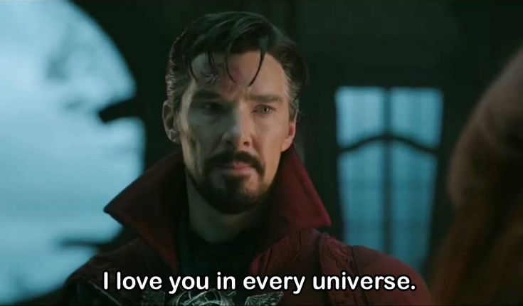
One day, we won't have to imagine the day. Until then, here's the scene I promised you — saved right here.
Flowers, first. A proper bunch, because you love them so much.
Shawarma, together. I said I'd get you some, and I intend to keep that promise.
A cinema date. Two movie lovers, one screen, and a memory we'll finally get to make for real.
Just being there. No screen between us. No “one day” — just that day.
This part is just for you, Queen Girl. Tap the letter when you're ready.
Hey, Queen Girl,
I wanted to make you a little corner of the universe that feels like you — a little cinematic, a little dreamy, and full of the small things that make you special.
I hope this makes you smile. I hope you remember that the things you love — your movies, your flowers, your swans, even the little details you might not think twice about — deserve to be celebrated just because they're yours.
i want you to be the best version of yourself and become succesful to go to germany together and to have you by my side in my first movie i love every detail about you and all i need from this world is you
Until our cinema date, our shawarma, and the flowers I promised you: here's a tiny reminder that I'm looking forward to the day we get to make a memory that doesn't need a screen.
Whatever the universe has in store, I hope today gives you a reason to grin that ridiculously cute grin of yours.
Your Kokky ♡
Made for Omnia — a girl who loves stories, flowers, and all the little things that make a life feel like a film worth watching.